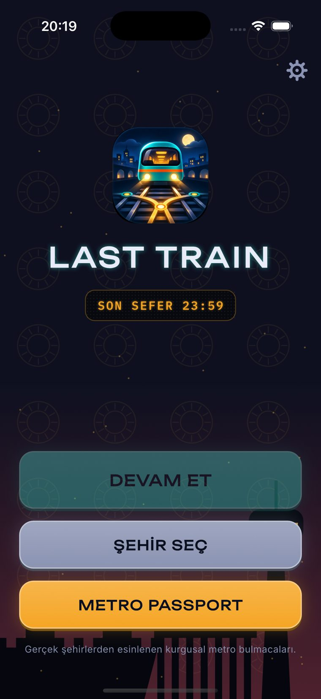
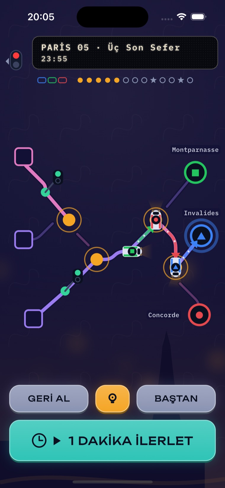
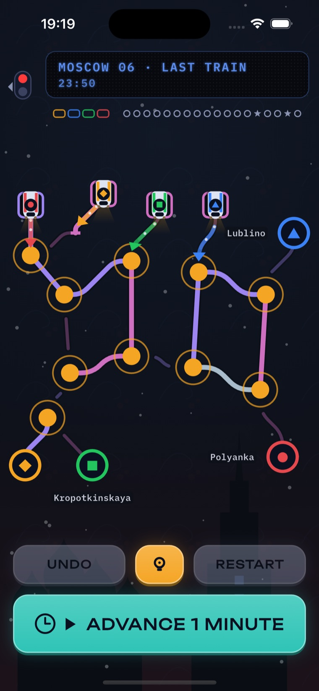

Bir el tutamakta, tünelde internet yok, her durakta inme ihtimali var. Last Train tam bu ana göre tasarlandı.
İngiltere'de toplu taşıma yolcularının %37'si yolda mobil oyun oynuyor [1]; ABD'de yolculukta en sevilen tür bulmaca (%38) [2].
Metro İstanbul'un günlük yolcu sayısı 2025'te 3,2 milyon zirvesine çıktı [3]. Türkiye'de yaklaşık 47 milyon mobil oyuncu var [8].
Bu türün ücretsiz oyunlarında en sık yorum “her iki bölümde bir reklam” [4]. Bizde reklam, hesap ve takip yok; tünelde de çalışır.
Kısa oturum (süre tahminimiz), kaldığın yerden devam; eleştirmenler bu türde kısa seansları “sarıcı” buluyor [5].
İpucu yalnız sıradaki hamleyi gösterir; çözümü vermeyen ipucu bu türde takılmayı önlüyor [6].
Tam Türkçe, Kızılay'dan Moskova'ya. TR mobil oyun harcaması 2025'te 347 mn $ (+%6) [7]; telefonların %77'si Android [9].
| OYUN | ONLARIN YOLU | LAST TRAIN'İN FARKI |
|---|---|---|
| Mini Metro ücretli · 0,99–3,99 $ [10] | Gerçek zamanlı: hat çizersin, yolcu artar, sistem eninde sonunda tıkanır. | Sıra tabanlı ve durdurulabilir; el yapımı, çözümü kesin bölümler. Kaybetmek değil, planlamak. |
| Railbound ücretli · 4,99 $ [12] | Ray döşeyip treni çalıştırırsın; geç bölümler sinir bozucu bulunuyor [6]. | Ray döşemezsin, makas ve sinyal çevirirsin; birden çok tren aynı anda hareket eder ve her hamlenin sonucu önceden görünür. |
| Unblock Me ücretsiz + reklam [4] | Soyut blok kaydırma; en sık şikâyet reklam. | Beş şehirli bir gece yolculuğu ve sıfır reklam. |
| Monument Valley ücretli · 3,99 $ [14] | Görsel şölen, ama “kısa” bulunuyor. | Şehir şehir ilerleme, pasaport damgaları; bonus hat ve günlük bulmaca yol haritasında. |
| Hitman GO ücretli · 4,99 $ [15] | Sıra tabanlı diorama bulmacası. | Aynı “düşün, sonra hamle yap” hissi; metro temasında, dikey ve tek elle. |
Konumumuz: Gerçek zamanlı kaos yerine, metroda tek elle oynanan, reklamsız ve süresiz bir son sefer bulmacası: her hamlenin sonucunu oynamadan önce görürsün.

Ankara + Bakü ücretsiz (12 bölüm). Paris, Londra ve Moskova tek bir ödemeyle açılır: küresel 2,99 $, Türkiye'de yerel fiyat ~99,99 TL (tahmin). Reklam yok, abonelik yok.


TRmetro oyunu · tren bulmaca · makas · mantık oyunu · internetsiz oyun · reklamsız · zeka oyunu
ENtrain puzzle · metro · railway logic · offline puzzle · no ads · turn based · subway
Alt başlık: “İnternetsiz metro bulmacası” / “Turn-based metro puzzle”
| Mağaza sayfasından indirme | %25–35 (tahmin) |
| 1. gün tutma | %30–40 (TR ort. %19, dünya %26 [24]) |
| 7. gün tutma | %12–18 (tahmin) |
| Ücretsizden ödemeye | %3–7 [17] |
| Puan / yorum | ≥ 4,5 · 3 ayda 200+ yorum |
Kaynaklar (erişim 06.11.2026; [1] [2] [14] [15] [17] eski veya anekdot düzeyinde, TL fiyatı ve KPI hedefleri tahmindir): [1] mcvuk.com/business-news/uk-commuters-turn-to-mobile-gaming-to-relax-says-candy-crush-developer-king · [2] cogconnected.com/2015/08/study-commuters-spend-nearly-one-third-of-travel-time-playing-games · [3] steelradar.com/rayli-sistemle-istanbul-un-38-kati-kisi-tasindi-51171 · [4] justuseapp.com/en/app/315019111/unblock-me/reviews · [5] opencritic.com/game/2032/mini-metro/reviews · [6] pocketgamer.com/railbound/review · [7] blog.udonis.co/mobile-game-market/turkiye · [8] xsolla.com/blog/xsolla-supports-turkiye-game-market-report-2025 · [9] gs.statcounter.com/os-market-share/mobile/turkey · [10] apps.apple.com/gb/app/mini-metro/id837860959 · [12] toucharcade.com/2022/08/16/railbound-release-date… · [13] toucharcade.com/2022/09/09/toucharcade-game-of-the-week-railbound · [14] pocketgamer.com/articles/060467/r · [15] pocketgamer.co.uk/hitman-go/hitman-go-drops-its-prices… · [17] pocketgamer.biz/indie-mavens-are-paid-apps-dead · [18] apple.com/newsroom/2019/03/apple-introduces-apple-arcade… · [19] macrumors.com/2024/02/26/developers-describe-apple-arcade-smell-of-death · [20] mobilegamer.biz/how-to-launch-a-premium-game-on-mobile · [22] appbot.co/blog/app-developers-apple-google-small-business-programs · [23] gamedeveloper.com/blogs/from-400-to-20-000-wishlists-with-1-video… · [24] gamedevreports.substack.com/p/adjust-the-mobile-market-of-turkiye